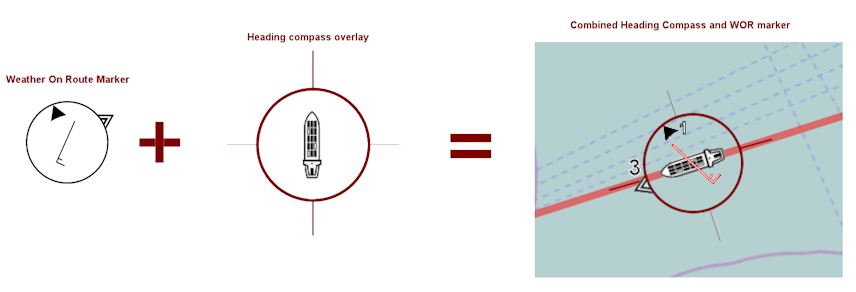
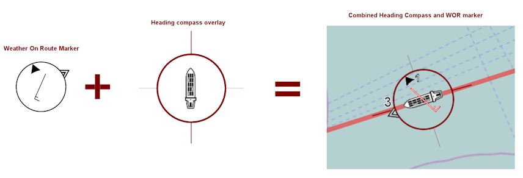
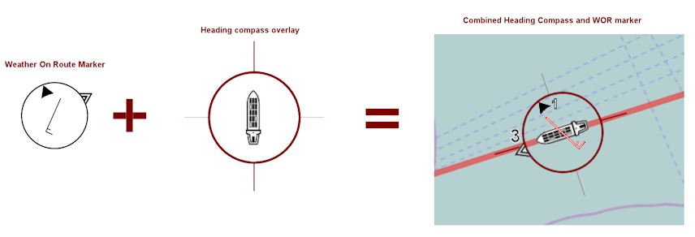

Weather On Route prototype v.0.4
Weather On Route Marker (WORM)

The WORM is an experimental design to simplify the display of 6 weather related points of data in single, easily interpretable, monochrome symbol.
Wind direction (standard wind arrow)
Wind speed (m/s)
Wave direction
Wave height (mean significant height in metres with one decimal)
Current direction
Current speed (knots with one decimal)
Derivation of symbolism:
Wave symbol: high contrast triangles on the outside circle - "waves are
on
the water".
Current symbol: Solid triangle inside the circle - "Current is
under
the water".
Wind arrow symbol: - the reference to integrate the wave and current symbols, without changing the existing standard.
Development notes:
This may or may not be the final form of the WORM. Any constructive input is welcome. Please email your suggestion to
rob@dma.dk
This prototype only encompasses the concept for the WORM and does not represent the Weather On Route service as a whole.
"vesselactual"
is the designation of the vessel in actual time and actual location - the vessel assumed this program is run from.
"ghostvessel"
is the designation of the virtual vessel projected in time and location.
Version 0.3 notes:
Ship icon added to map.
Route direction on map (E/W) changes bar direction accordingly on control bar, as left/right.
Added map ship icon heading compass
Weather service communcation added
Version 0.4 notes:
Modified current arrow to make more obvious
Locked ship and weather icons to map so rotating displays correct weather directions
Aligned font of vessel WORM correctly
Placed windarrow on top of ship
Changed ajax call to private server to make prototype for BW service against existing DMI
Made initial request/response work for prototype ajax
Polished ajax call as a function for all single point weather query
Extracted functions from main html to ease pending integration with angular
Added minZoom to map to prevent infinite zoom out
Added vesselactual
Made vesselactual GPS work if available
Made compassheading for vesselactual if available
Version 0.5 notes:
Made weather service call for vesselactual
Made vesselWORM scale setting global, for each separate vessel and made ghostvessel smaller
WORM indicators not used (not returned weather data) are hidden by scaling them to 0, then reverting to instanciated scale to reappear
 
